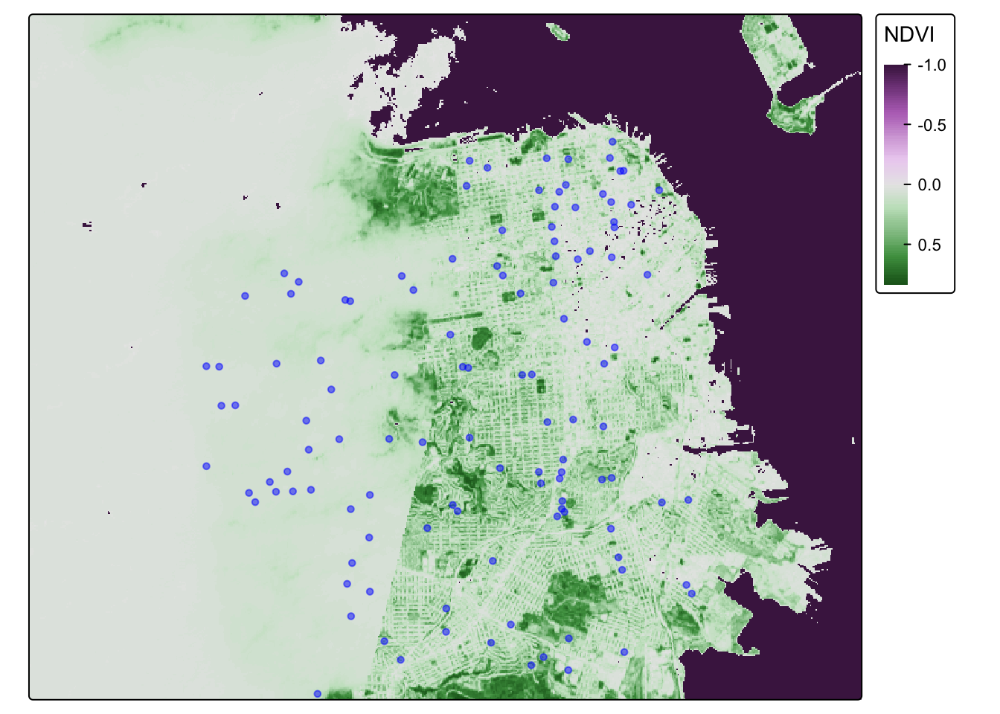
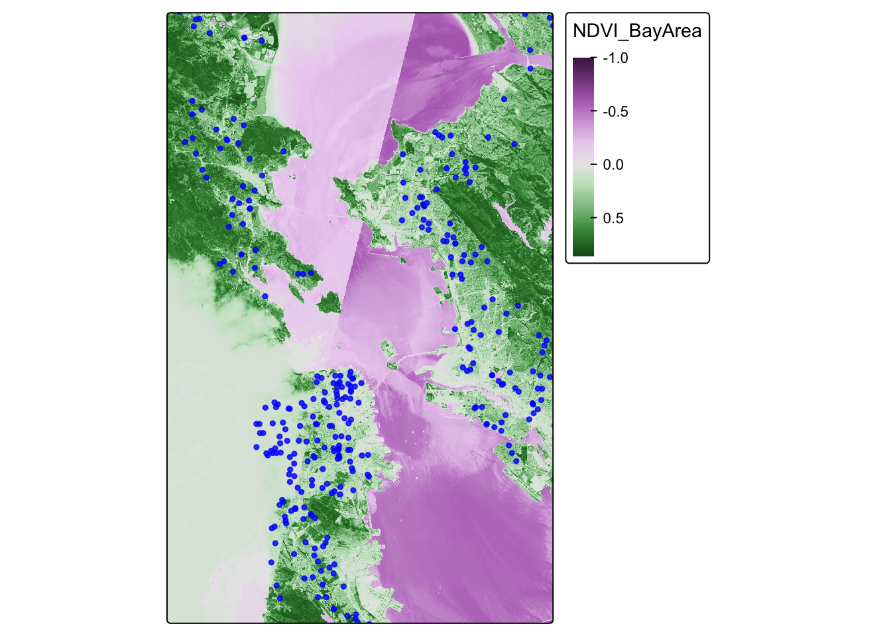

Lab 5: Working with Raster data, Join geocoded addresses to polygon data to create exposure metrics
In this lab, we are going to work with vector and raster data, spatially joining point data to vector data
The objectives of this guide are to teach you:
- Introduce raster data
- Import our dataset with simulated geocoded addresses and mortality data from an ovarian cancer cohort
- Import a dataset with greenspace across the Bay Area
- Compare projections of datasets and re-project if needed
- Make maps
- Spatially join the two datasets
- Run a quick statistical analysis on the two datasets combined
Enough talk–let’s get coding!
# Load packages
library(terra)## terra 1.8.29library(sf)## Linking to GEOS 3.13.0, GDAL 3.8.5, PROJ 9.5.1; sf_use_s2() is TRUElibrary(tmap)
library(MapGAM)## Loading required package: sp## Loading required package: gam## Loading required package: splines## Loading required package: foreach## Loaded gam 1.22-5## Loading required package: survivalRasters
Raster datasets are simply an array of pixels/cells organized into rows and columns (or a grid) where each cell contains a value representing information, such as temperature, vegetation, land use, air pollution, etc. Raster maps usually represent continuous phenomena such as elevation, temperature, or population density. Discrete features such as soil type or land-cover classes can also be represented in the raster data model. Rasters are aerial photographs, imagery from satellites, Google Street View images, etc. A few things to note.
- Raster datasets are always rectangular (rows x col) similar to
matrices. Irregular boundaries are created by using
NAs. - Rasters have to contain values of the same type (int, float, boolean) throughout the raster, just like matrices and unlike data frames.
- The size of the raster depends on the resolution and the extent of the raster. As such many rasters are large and often cannot be held in memory completely.
The workhorse package for working with rasters in R is the
terra package by Robert Hijmans. terra
has functions for creating, reading, manipulating, and writing raster
data. The package also implements raster algebra and many other
functions for raster data manipulation. The package works with
SpatRaster objects. The rast() function is
used to create these objects.
Typically you will bring in a raster dataset directly from a file. These files come in many different forms, typically .tif, .img, and .grd.
We’ll bring in the file NDVI_rast.tif. The file contains normalized
difference vegetation index (NDVI) data for the Bay Area. These data are
taken from Landsat satellite data that I downloaded from Google Earth
Engine. We use the function rast() to bring in data in
raster form, then take a look at the dataset.
url <- "https://github.com/pjames-ucdavis/SPH215/raw/main/NDVI_rast2.tif"
download.file(url, destfile = "NDVI_rast2.tif", mode = "wb")
NDVI_raster = rast("NDVI_rast2.tif")
## Get summary of raster data
NDVI_raster## class : SpatRaster
## dimensions : 1856, 1485, 1 (nrow, ncol, nlyr)
## resolution : 0.0002694946, 0.0002694946 (x, y)
## extent : -122.6001, -122.1999, 37.59988, 38.10007 (xmin, xmax, ymin, ymax)
## coord. ref. : lon/lat WGS 84 (EPSG:4326)
## source : NDVI_rast2.tif
## name : NDVI_BayArea
## min value : -1.0000000
## max value : 0.8533574
Does it have a CRS?
## Check CRS
st_crs(NDVI_raster)## Coordinate Reference System:
## User input: WGS 84
## wkt:
## GEOGCRS["WGS 84",
## ENSEMBLE["World Geodetic System 1984 ensemble",
## MEMBER["World Geodetic System 1984 (Transit)"],
## MEMBER["World Geodetic System 1984 (G730)"],
## MEMBER["World Geodetic System 1984 (G873)"],
## MEMBER["World Geodetic System 1984 (G1150)"],
## MEMBER["World Geodetic System 1984 (G1674)"],
## MEMBER["World Geodetic System 1984 (G1762)"],
## MEMBER["World Geodetic System 1984 (G2139)"],
## MEMBER["World Geodetic System 1984 (G2296)"],
## ELLIPSOID["WGS 84",6378137,298.257223563,
## LENGTHUNIT["metre",1]],
## ENSEMBLEACCURACY[2.0]],
## PRIMEM["Greenwich",0,
## ANGLEUNIT["degree",0.0174532925199433]],
## CS[ellipsoidal,2],
## AXIS["geodetic latitude (Lat)",north,
## ORDER[1],
## ANGLEUNIT["degree",0.0174532925199433]],
## AXIS["geodetic longitude (Lon)",east,
## ORDER[2],
## ANGLEUNIT["degree",0.0174532925199433]],
## USAGE[
## SCOPE["Horizontal component of 3D system."],
## AREA["World."],
## BBOX[-90,-180,90,180]],
## ID["EPSG",4326]]
OK we have what looks like a raster. We see our resolution and our extent, and we have a CRS. Nice! Shall we plot this?
## Plot the raster on a map
tmap_mode("plot")## ℹ tmap modes "plot" - "view"
## ℹ toggle with `tmap::ttm()`NDVI_map = tm_shape(NDVI_raster) +
tm_raster(style = "cont") +
tm_legend(outside = TRUE)##
## ── tmap v3 code detected ───────────────────────────────────────────────────────
## [v3->v4] `tm_raster()`: instead of `style = "cont"`, use col.scale =
## `tm_scale_continuous()`.NDVI_map## [v3->v4] `tm_legend()`: use 'tm_legend()' inside a layer function, e.g.
## 'tm_polygons(..., fill.legend = tm_legend())'
## Variable(s) "col" contains positive and negative values, so midpoint is set to 0. Set midpoint = NA to show the full range of visual values.
##
## This message is displayed once every 8 hours.
Looks pretty cool! Seems to be the Bay Area, and we have some nice variability. But we let’s see if we can make this fancier.
# palette for plotting
breaks_ndvi <- c(-1,-0.2,-0.1,0,0.025 ,0.05,0.075,0.1,0.125,0.15,0.175,0.2 ,0.25 ,0.3 ,0.35,0.4,0.45,0.5,0.55,0.6,1)
palette_ndvi <- c("#BFBFBF","#DBDBDB","#FFFFE0","#FFFACC","#EDE8B5","#DED99C","#CCC782","#BDB86B","#B0C261","#A3CC59","#91BF52","#80B347","#70A340","#619636","#4F8A2E","#407D24","#306E1C","#216112","#0F540A","#004500")
NDVI_map = tm_shape(NDVI_raster) +
tm_raster(title = "NDVI",
style="cont",
palette = palette_ndvi
) +
tm_legend(outside = TRUE)## ## ── tmap v3 code detected ───────────────────────────────────────────────────────## [v3->v4] `tm_raster()`: instead of `style = "cont"`, use col.scale =
## `tm_scale_continuous()`.
## ℹ Migrate the argument(s) 'palette' (rename to 'values') to
## 'tm_scale_continuous(<HERE>)'
## [v3->v4] `tm_raster()`: migrate the argument(s) related to the legend of the
## visual variable `col` namely 'title' to 'col.legend = tm_legend(<HERE>)'NDVI_map
Crop
OK, let’s see if we can crop this to focus on San Francisco. I’ve
googled the lat and long for the area around San Francisco, and I’ll put
these right into my crop() function. I can use the
tmap_mode("view") now because the raster is small enough
for R to make interactive.
sf_rast<-crop(NDVI_raster, ext(-122.55, -122.35, 37.7, 37.83))
tmap_mode("plot")## ℹ tmap modes "plot" - "view"NDVI_sf_map = tm_shape(sf_rast) +
tm_raster(title = "NDVI",
style="cont",
) +
tm_legend(outside = TRUE)##
## ── tmap v3 code detected ───────────────────────────────────────────────────────
## [v3->v4] `tm_raster()`: instead of `style = "cont"`, use col.scale =
## `tm_scale_continuous()`.[v3->v4] `tm_raster()`: migrate the argument(s) related to the legend of the
## visual variable `col` namely 'title' to 'col.legend = tm_legend(<HERE>)'NDVI_sf_map## Variable(s) "col" contains positive and negative values, so midpoint is set to 0. Set midpoint = NA to show the full range of visual values.
Classify
So negative values of NDVI represent water. Let’s set all negative values to -1, and that will help us to distinguish water from land easier.
sf_rast_neg <- app(sf_rast, fun=function(x){ x[x <= 0] <- -1; return(x)} )
NDVI_sf_map_neg = tm_shape(sf_rast_neg) +
tm_raster(title = "NDVI",
style="cont",
) +
tm_legend(outside = TRUE)## ## ── tmap v3 code detected ───────────────────────────────────────────────────────## [v3->v4] `tm_raster()`: instead of `style = "cont"`, use col.scale =
## `tm_scale_continuous()`.
## [v3->v4] `tm_raster()`: migrate the argument(s) related to the legend of the
## visual variable `col` namely 'title' to 'col.legend = tm_legend(<HERE>)'NDVI_sf_map_neg## Variable(s) "col" contains positive and negative values, so midpoint is set to 0. Set midpoint = NA to show the full range of visual values.
Nice. What do we notice? The coast of San Francisco might have some cloud cover errors! Satellite data isn’t perfect! But the good news is, we’ve learned how to bring in raster data! I think we need a badge!!!!

One last step. Let’s put all our knowledge together and map our old friend CAdata on top of the NDVI data in San Francisco. First, let’s bring in the CAdata dataset on ovarian cancer cases again.
data(CAdata)
ca_pts <- CAdata
ca_proj <- "+proj=lcc +lat_1=40 +lat_2=41.66666666666666
+lat_0=39.33333333333334 +lon_0=-122 +x_0=2000000
+y_0=500000.0000000002 +ellps=GRS80
+datum=NAD83 +units=m +no_defs"
ca_pts <- st_as_sf(CAdata, coords=c("X","Y"), crs=ca_proj)
Let’s check the CRS and compare it to our NDVI dataset.
st_crs(ca_pts)## Coordinate Reference System:
## User input: +proj=lcc +lat_1=40 +lat_2=41.66666666666666
## +lat_0=39.33333333333334 +lon_0=-122 +x_0=2000000
## +y_0=500000.0000000002 +ellps=GRS80
## +datum=NAD83 +units=m +no_defs
## wkt:
## PROJCRS["unknown",
## BASEGEOGCRS["unknown",
## DATUM["North American Datum 1983",
## ELLIPSOID["GRS 1980",6378137,298.257222101,
## LENGTHUNIT["metre",1]],
## ID["EPSG",6269]],
## PRIMEM["Greenwich",0,
## ANGLEUNIT["degree",0.0174532925199433],
## ID["EPSG",8901]]],
## CONVERSION["unknown",
## METHOD["Lambert Conic Conformal (2SP)",
## ID["EPSG",9802]],
## PARAMETER["Latitude of false origin",39.3333333333333,
## ANGLEUNIT["degree",0.0174532925199433],
## ID["EPSG",8821]],
## PARAMETER["Longitude of false origin",-122,
## ANGLEUNIT["degree",0.0174532925199433],
## ID["EPSG",8822]],
## PARAMETER["Latitude of 1st standard parallel",40,
## ANGLEUNIT["degree",0.0174532925199433],
## ID["EPSG",8823]],
## PARAMETER["Latitude of 2nd standard parallel",41.6666666666667,
## ANGLEUNIT["degree",0.0174532925199433],
## ID["EPSG",8824]],
## PARAMETER["Easting at false origin",2000000,
## LENGTHUNIT["metre",1],
## ID["EPSG",8826]],
## PARAMETER["Northing at false origin",500000,
## LENGTHUNIT["metre",1],
## ID["EPSG",8827]]],
## CS[Cartesian,2],
## AXIS["(E)",east,
## ORDER[1],
## LENGTHUNIT["metre",1,
## ID["EPSG",9001]]],
## AXIS["(N)",north,
## ORDER[2],
## LENGTHUNIT["metre",1,
## ID["EPSG",9001]]]]st_crs(sf_rast_neg)## Coordinate Reference System:
## User input: WGS 84
## wkt:
## GEOGCRS["WGS 84",
## ENSEMBLE["World Geodetic System 1984 ensemble",
## MEMBER["World Geodetic System 1984 (Transit)"],
## MEMBER["World Geodetic System 1984 (G730)"],
## MEMBER["World Geodetic System 1984 (G873)"],
## MEMBER["World Geodetic System 1984 (G1150)"],
## MEMBER["World Geodetic System 1984 (G1674)"],
## MEMBER["World Geodetic System 1984 (G1762)"],
## MEMBER["World Geodetic System 1984 (G2139)"],
## MEMBER["World Geodetic System 1984 (G2296)"],
## ELLIPSOID["WGS 84",6378137,298.257223563,
## LENGTHUNIT["metre",1]],
## ENSEMBLEACCURACY[2.0]],
## PRIMEM["Greenwich",0,
## ANGLEUNIT["degree",0.0174532925199433]],
## CS[ellipsoidal,2],
## AXIS["geodetic latitude (Lat)",north,
## ORDER[1],
## ANGLEUNIT["degree",0.0174532925199433]],
## AXIS["geodetic longitude (Lon)",east,
## ORDER[2],
## ANGLEUNIT["degree",0.0174532925199433]],
## USAGE[
## SCOPE["Horizontal component of 3D system."],
## AREA["World."],
## BBOX[-90,-180,90,180]],
## ID["EPSG",4326]]
Hmmm, let’s make sure they are the same projection.
ca_pts_proj<-st_transform(ca_pts,st_crs(sf_rast_neg))
st_crs(ca_pts_proj)## Coordinate Reference System:
## User input: WGS 84
## wkt:
## GEOGCRS["WGS 84",
## ENSEMBLE["World Geodetic System 1984 ensemble",
## MEMBER["World Geodetic System 1984 (Transit)"],
## MEMBER["World Geodetic System 1984 (G730)"],
## MEMBER["World Geodetic System 1984 (G873)"],
## MEMBER["World Geodetic System 1984 (G1150)"],
## MEMBER["World Geodetic System 1984 (G1674)"],
## MEMBER["World Geodetic System 1984 (G1762)"],
## MEMBER["World Geodetic System 1984 (G2139)"],
## MEMBER["World Geodetic System 1984 (G2296)"],
## ELLIPSOID["WGS 84",6378137,298.257223563,
## LENGTHUNIT["metre",1]],
## ENSEMBLEACCURACY[2.0]],
## PRIMEM["Greenwich",0,
## ANGLEUNIT["degree",0.0174532925199433]],
## CS[ellipsoidal,2],
## AXIS["geodetic latitude (Lat)",north,
## ORDER[1],
## ANGLEUNIT["degree",0.0174532925199433]],
## AXIS["geodetic longitude (Lon)",east,
## ORDER[2],
## ANGLEUNIT["degree",0.0174532925199433]],
## USAGE[
## SCOPE["Horizontal component of 3D system."],
## AREA["World."],
## BBOX[-90,-180,90,180]],
## ID["EPSG",4326]]
They should be good to go now. Let’s map these addresses on top of the raster data!
tmap_mode("plot")## ℹ tmap modes "plot" - "view"NDVI_cancer_map = tm_shape(sf_rast_neg) +
tm_raster(style = "cont", title = "NDVI") +
tm_legend(outside = TRUE) +
tm_shape(ca_pts_proj) +
tm_dots(size=0.3, alpha=0.5, col = "blue")##
## ── tmap v3 code detected ───────────────────────────────────────────────────────
## [v3->v4] `tm_raster()`: instead of `style = "cont"`, use col.scale =
## `tm_scale_continuous()`.[v3->v4] `tm_raster()`: migrate the argument(s) related to the legend of the
## visual variable `col` namely 'title' to 'col.legend = tm_legend(<HERE>)'[v3->v4] `tm_dots()`: use 'fill' for the fill color of polygons/symbols
## (instead of 'col'), and 'col' for the outlines (instead of 'border.col').[v3->v4] `tm_dots()`: use `fill_alpha` instead of `alpha`.NDVI_cancer_map## Variable(s) "col" contains positive and negative values, so midpoint is set to 0. Set midpoint = NA to show the full range of visual values.
That is one fine looking map.
Install packages
First, let’s install our packages.
library(sf)
library(MapGAM)
library(tidyverse)## ── Attaching core tidyverse packages ──────────────────────── tidyverse 2.0.0 ──
## ✔ dplyr 1.1.4 ✔ readr 2.1.5
## ✔ forcats 1.0.0 ✔ stringr 1.5.1
## ✔ ggplot2 3.5.2 ✔ tibble 3.2.1
## ✔ lubridate 1.9.4 ✔ tidyr 1.3.1
## ✔ purrr 1.0.4
## ── Conflicts ────────────────────────────────────────── tidyverse_conflicts() ──
## ✖ purrr::accumulate() masks foreach::accumulate()
## ✖ tidyr::extract() masks terra::extract()
## ✖ dplyr::filter() masks stats::filter()
## ✖ dplyr::lag() masks stats::lag()
## ✖ purrr::when() masks foreach::when()
## ℹ Use the conflicted package (<http://conflicted.r-lib.org/>) to force all conflicts to become errorslibrary(flextable)##
## Attaching package: 'flextable'
##
## The following object is masked from 'package:purrr':
##
## compose
##
## The following objects are masked from 'package:terra':
##
## align, colorize, rotate, widthlibrary(RColorBrewer)
library(tmap)
library(terra)
Bring in Cancer dataset
We will be using data included in the MapGAM package. As a reminder: While they are based on real patterns expected in observational epidemiologic studies, these data have been simulated and are for teaching purposes only. The data contain 5000 simulated ovarian cancer cases. While this is a cohort with time to mortality, for the purposes of our class, we will conduct simple tabular analyses looking at associations between different spatial exposures with mortality at end of follow-up.
As another reminder, the CAdata dataset contains the following variables:
- time (follow-up time)
- event (1=dead, 0=censored)
- X (Latitude)
- Y (Longitude)
- AGE (age in years)
- INS (insurance status, categorical)
Read in Cancer Dataset
Next, we want to read in all of our spatial data. First, we read in the CAdata dataset from the MapGAM package, and then convert it to a spatial dataset.
data(CAdata)
ca_pts <- CAdata
ca_proj <- "+proj=lcc +lat_1=40 +lat_2=41.66666666666666
+lat_0=39.33333333333334 +lon_0=-122 +x_0=2000000
+y_0=500000.0000000002 +ellps=GRS80
+datum=NAD83 +units=m +no_defs"
ca_pts <- st_as_sf(CAdata, coords=c("X","Y"), crs=ca_proj)
Read in Greenspace Data
We then read in the raster for greenspace data across the Bay Area. Finally, we check the file to make sure it was read correctly. Does it have a coordinate reference system?
url <- "https://github.com/pjames-ucdavis/SPH215/raw/main/NDVI_rast2.tif"
download.file(url, destfile = "NDVI_rast2.tif", mode = "wb")
ndvi_rast = rast("NDVI_rast2.tif")
ndvi_rast## class : SpatRaster
## dimensions : 1856, 1485, 1 (nrow, ncol, nlyr)
## resolution : 0.0002694946, 0.0002694946 (x, y)
## extent : -122.6001, -122.1999, 37.59988, 38.10007 (xmin, xmax, ymin, ymax)
## coord. ref. : lon/lat WGS 84 (EPSG:4326)
## source : NDVI_rast2.tif
## name : NDVI_BayArea
## min value : -1.0000000
## max value : 0.8533574
Check Projections for all Spatial Data
Finally, we check the projections. This is the most important
step and is guaranteed to make life easier with your geospatial
analysis! When you have files in different projections, this
can be a major problem because when we try to overlay the two files they
may not overlap. First we check the coordinate reference systems for
each dataset using st_crs(). We then use the
st_transform() function to convert the projection for our
point data to match that of our polygon data. When we are done, do the
projections of the two datasets match?
## Look at the coordinate reference system for the cancer data, and for greenspace data
st_crs(ca_pts)## Coordinate Reference System:
## User input: +proj=lcc +lat_1=40 +lat_2=41.66666666666666
## +lat_0=39.33333333333334 +lon_0=-122 +x_0=2000000
## +y_0=500000.0000000002 +ellps=GRS80
## +datum=NAD83 +units=m +no_defs
## wkt:
## PROJCRS["unknown",
## BASEGEOGCRS["unknown",
## DATUM["North American Datum 1983",
## ELLIPSOID["GRS 1980",6378137,298.257222101,
## LENGTHUNIT["metre",1]],
## ID["EPSG",6269]],
## PRIMEM["Greenwich",0,
## ANGLEUNIT["degree",0.0174532925199433],
## ID["EPSG",8901]]],
## CONVERSION["unknown",
## METHOD["Lambert Conic Conformal (2SP)",
## ID["EPSG",9802]],
## PARAMETER["Latitude of false origin",39.3333333333333,
## ANGLEUNIT["degree",0.0174532925199433],
## ID["EPSG",8821]],
## PARAMETER["Longitude of false origin",-122,
## ANGLEUNIT["degree",0.0174532925199433],
## ID["EPSG",8822]],
## PARAMETER["Latitude of 1st standard parallel",40,
## ANGLEUNIT["degree",0.0174532925199433],
## ID["EPSG",8823]],
## PARAMETER["Latitude of 2nd standard parallel",41.6666666666667,
## ANGLEUNIT["degree",0.0174532925199433],
## ID["EPSG",8824]],
## PARAMETER["Easting at false origin",2000000,
## LENGTHUNIT["metre",1],
## ID["EPSG",8826]],
## PARAMETER["Northing at false origin",500000,
## LENGTHUNIT["metre",1],
## ID["EPSG",8827]]],
## CS[Cartesian,2],
## AXIS["(E)",east,
## ORDER[1],
## LENGTHUNIT["metre",1,
## ID["EPSG",9001]]],
## AXIS["(N)",north,
## ORDER[2],
## LENGTHUNIT["metre",1,
## ID["EPSG",9001]]]]st_crs(ndvi_rast)## Coordinate Reference System:
## User input: WGS 84
## wkt:
## GEOGCRS["WGS 84",
## ENSEMBLE["World Geodetic System 1984 ensemble",
## MEMBER["World Geodetic System 1984 (Transit)"],
## MEMBER["World Geodetic System 1984 (G730)"],
## MEMBER["World Geodetic System 1984 (G873)"],
## MEMBER["World Geodetic System 1984 (G1150)"],
## MEMBER["World Geodetic System 1984 (G1674)"],
## MEMBER["World Geodetic System 1984 (G1762)"],
## MEMBER["World Geodetic System 1984 (G2139)"],
## MEMBER["World Geodetic System 1984 (G2296)"],
## ELLIPSOID["WGS 84",6378137,298.257223563,
## LENGTHUNIT["metre",1]],
## ENSEMBLEACCURACY[2.0]],
## PRIMEM["Greenwich",0,
## ANGLEUNIT["degree",0.0174532925199433]],
## CS[ellipsoidal,2],
## AXIS["geodetic latitude (Lat)",north,
## ORDER[1],
## ANGLEUNIT["degree",0.0174532925199433]],
## AXIS["geodetic longitude (Lon)",east,
## ORDER[2],
## ANGLEUNIT["degree",0.0174532925199433]],
## USAGE[
## SCOPE["Horizontal component of 3D system."],
## AREA["World."],
## BBOX[-90,-180,90,180]],
## ID["EPSG",4326]]## Transform the coordinate reference system of the cancer data to match that
## of the greenspace data
ca_transformed <-st_transform(ca_pts, st_crs(ndvi_rast))
## Check projections
st_crs(ndvi_rast)==st_crs(ca_transformed)## [1] TRUE
Map The Data
Now, we will visualize our spatial data using tmap. We will overlay the greenspace maps with the ovarian cancer data. Do any patterns jump out, or are there any participants living in the middle of the Bay?
ca.ndvi.map <- tm_shape(ndvi_rast) +
tm_raster(style = "cont") +
tm_shape(ca_transformed) +
tm_dots(size=0.25, alpha=0.8, col="blue")## ## ── tmap v3 code detected ───────────────────────────────────────────────────────## [v3->v4] `tm_raster()`: instead of `style = "cont"`, use col.scale =
## `tm_scale_continuous()`.
## [v3->v4] `tm_dots()`: use `fill_alpha` instead of `alpha`.ca.ndvi.map## Variable(s) "col" contains positive and negative values, so midpoint is set to 0. Set midpoint = NA to show the full range of visual values.
We find that the most least green areas are in the downtown areas of San Francisco and Oakland, which makes sense. Our cancer cohort data overlaps with the greenspace map, which is reassuring.
Extract Raster Values to Points
Now that we have visualized our data, let’s see if there is an
association between greenspace exposure and mortality among ovarian
cancer cases. We will first extract the values for greenspace to the
cancer dataset (merge the two datasets based on location of cases and
the greenspace pixel that they are in) using
terra::extract. Then we will check the distribution of
greenspace exposure in our cancer cases. We will use a two-sided
chi-squared test to test our hypothesis of the association between
greenspace exposure and mortality among ovarian cancer cases. What do we
find?
## Spatially join the cancer point data to the walkability polygon data
ndvi_cancer = data.frame(ca_transformed,terra::extract(ndvi_rast, ca_transformed))
glimpse(ndvi_cancer) ## Rows: 5,000
## Columns: 7
## $ time <dbl> 1.2759763, 4.2121775, 0.2074870, 3.5099074, 10.2977017, 4…
## $ event <dbl> 1, 1, 1, 1, 0, 1, 0, 1, 1, 1, 1, 1, 0, 1, 1, 1, 1, 1, 0, …
## $ AGE <int> 67, 56, 67, 69, 75, 59, 62, 39, 68, 72, 78, 79, 46, 77, 6…
## $ INS <fct> Mcr, Mcd, Mng, Mcr, Mng, Mcr, Oth, Uni, Uni, Uni, Mcr, Mn…
## $ geometry <POINT [°]> POINT (-122.3492 38.3025), POINT (-118.0174 34.1437…
## $ ID <dbl> 1, 2, 3, 4, 5, 6, 7, 8, 9, 10, 11, 12, 13, 14, 15, 16, 17…
## $ NDVI_BayArea <dbl> NA, NA, NA, NA, NA, NA, NA, NA, NA, NA, NA, NA, 0.2483448…## Take a look at a summary of the values
summary(ndvi_cancer$NDVI_BayArea)## Min. 1st Qu. Median Mean 3rd Qu. Max. NA's
## -0.311 0.123 0.239 0.267 0.376 0.757 4688
Looks like we have lots of NA values. That is because some of our
participants live outside of the area of our greenspace data. Let’s drop
those missing values using drop_na(), which is slightly
different from how we’ve done this before.
ndvi_cancer_nomiss <- ndvi_cancer %>% drop_na(NDVI_BayArea)
## Take a look at a summary of the values
summary(ndvi_cancer_nomiss$NDVI_BayArea)## Min. 1st Qu. Median Mean 3rd Qu. Max.
## -0.3107 0.1228 0.2385 0.2666 0.3759 0.7572glimpse(ndvi_cancer_nomiss)## Rows: 312
## Columns: 7
## $ time <dbl> 7.0125318, 0.9644371, 15.0007229, 2.9063815, 16.7471545, …
## $ event <dbl> 0, 1, 0, 0, 1, 1, 1, 1, 1, 0, 0, 0, 1, 0, 0, 0, 1, 1, 1, …
## $ AGE <int> 46, 69, 45, 78, 72, 73, 77, 72, 46, 61, 79, 54, 78, 60, 7…
## $ INS <fct> Mcr, Unk, Mcd, Mcr, Mng, Mcr, Mng, Mcr, Oth, Uni, Mcr, Un…
## $ geometry <POINT [°]> POINT (-122.2031 38.09592), POINT (-122.416 37.7678…
## $ ID <dbl> 13, 42, 48, 49, 64, 74, 100, 124, 141, 173, 178, 219, 223…
## $ NDVI_BayArea <dbl> 0.24834478, 0.03120242, 0.21596712, 0.09975440, 0.5120553…
Analyze our Joined Dataset
OK, we have a dataset with no missingness. Can we look at the distribution of greenspace exposure among participants?
ndvi_cancer_nomiss %>%
ggplot() +
geom_histogram(mapping = aes(x=NDVI_BayArea)) ## `stat_bin()` using `bins = 30`. Pick better value with `binwidth`.
For the purposes of our analysis, let’s divide up our greenspace data
into quartiles. We will do this using the mutate() function
combined with the ntile() function. Then we will take a
glimpse at our new dataset.
ndvi_cancer_nomiss <- ndvi_cancer_nomiss %>%
mutate(ndvi_quartile = ntile(NDVI_BayArea, 4))
glimpse(ndvi_cancer_nomiss)## Rows: 312
## Columns: 8
## $ time <dbl> 7.0125318, 0.9644371, 15.0007229, 2.9063815, 16.7471545,…
## $ event <dbl> 0, 1, 0, 0, 1, 1, 1, 1, 1, 0, 0, 0, 1, 0, 0, 0, 1, 1, 1,…
## $ AGE <int> 46, 69, 45, 78, 72, 73, 77, 72, 46, 61, 79, 54, 78, 60, …
## $ INS <fct> Mcr, Unk, Mcd, Mcr, Mng, Mcr, Mng, Mcr, Oth, Uni, Mcr, U…
## $ geometry <POINT [°]> POINT (-122.2031 38.09592), POINT (-122.416 37.767…
## $ ID <dbl> 13, 42, 48, 49, 64, 74, 100, 124, 141, 173, 178, 219, 22…
## $ NDVI_BayArea <dbl> 0.24834478, 0.03120242, 0.21596712, 0.09975440, 0.512055…
## $ ndvi_quartile <int> 3, 1, 2, 1, 4, 1, 3, 1, 4, 1, 1, 3, 3, 1, 3, 3, 1, 3, 4,…
OK that looks good. We have created a new variable ndvi_quartile that tells us what quartile of greenspace a participant lives in. Let’s do a two by two table of greenspace quartiles by event, which is whether a participant died over followup.
## Create a contingency table of event by walk_quartile
tab <- table(ndvi_cancer_nomiss$ndvi_quartile, ndvi_cancer_nomiss$event)
tab##
## 0 1
## 1 36 42
## 2 37 41
## 3 32 46
## 4 31 47
Hmmm, that’s interesting, but let’s look at this by percentages instead.
## Convert to percentages by column
tab_col_perc <- prop.table(tab, margin = 2) * 100
round(tab_col_perc, 1)##
## 0 1
## 1 26.5 23.9
## 2 27.2 23.3
## 3 23.5 26.1
## 4 22.8 26.7
Do you think the percentages are different by quartile of greenspace?
We can run a chi-squared test to be sure. This is a statistical test to
see whether there is a difference in the probability of event,
or whether a participant died over follow-up, by the quartiles of
greenspace We do this with the chisq.test() function.
## Chi-squared test
chisq.test(tab)##
## Pearson's Chi-squared test
##
## data: tab
## X-squared = 1.3556, df = 3, p-value = 0.716
OK, how do we interpret this? Our null hypothesis is that there is no association between mortality at end of follow-up and increasing quartile of greenspace. Our alternative hypothesis is that there is an association between mortality at end of follow-up and increasing quartile of greenspace. We use a two-sided chi-squared test with alpha=0.05. Assuming no sources of bias and that the null hypothesis is true, the probability of observing increases in mortality at end of follow-up with increasing quartiles of greenspace as or more extreme as those produced in these data is 0.716. Since p>0.05, we fail to reject the null hypothesis and conclude that greenspace is not associated with mortality at end of follow-up (under the assumptions stated above). In other words, we don’t see a relationship between greenspace exposure and our outcome (dying over followup).